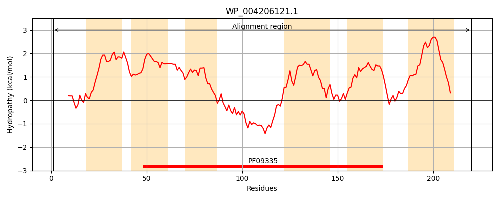
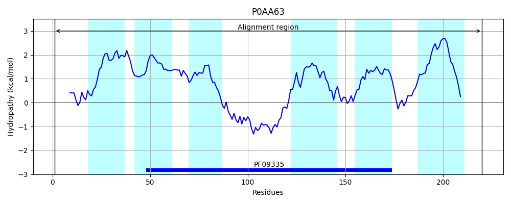
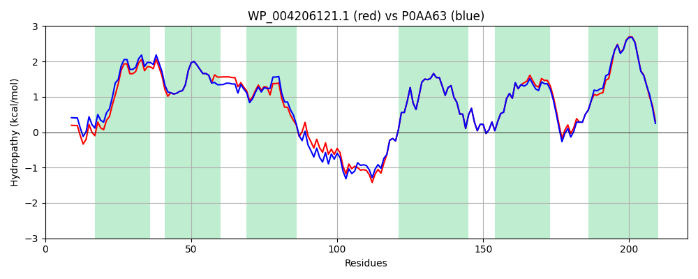

Hit Accession: P0AA63
Hit TCID: 9.B.27.2.2
Hit Description: gnl|BL_ORD_ID|8644 gnl|TC-DB|P0AA63|9.B.27.2.2 Inner membrane protein yqjA - Escherichia coli (strain K12).
Mach Len: 220
e:0.000000
Query TMS Count : 6
Hit TMS Count: 6
TMS-Overlap Score: 6.400000
Predicted Substrates:CHEBI:5584;hydron, CHEBI:9090;selenite(2-)
BLAST Alignment:
Score: 1081 , Bit scores: 421 bits, E-value: 3.2e-152, Alignment length: 220, Percentage identity: 93
Query: 1 MELLTQLLNALWAQDYETLANPSMIGMLYFVLFMILFLENGLLPAAFLPGDSLLVLVGVLIAKGAMGFPETLLLLTAAASLGCWLSYIQGRWLGNTRIVQNWLSHLPSHYHQRAHHLFHKHGLSALLIGRFIAFVRTLLPTIAGLSGLNNARFQFFNWMSGLLWVLILTSLGYLLGKTPVFLKYEDQLMSCLMLLPVALLVFGLIGSLVVLWKKKYRSRG 220
MELLTQLL ALWAQD+ETLANPSMIGMLYFVLF+ILFLENGLLPAAFLPGDSLLVLVGVLIAKGAMG+P+T+LLLT AASLGCW+SYIQGRWLGNTR VQNWLSHLP+HYHQRAHHLFHKHGLSALLIGRFIAFVRTLLPTIAGLSGLNNARFQFFNWMSGLLWVLILT+LGY+LGKTPVFLKYEDQLMSCLMLLPV LLVFGL GSLVVLWKKKY +RG
Sbjct: 1 MELLTQLLQALWAQDFETLANPSMIGMLYFVLFVILFLENGLLPAAFLPGDSLLVLVGVLIAKGAMGYPQTILLLTVAASLGCWVSYIQGRWLGNTRTVQNWLSHLPAHYHQRAHHLFHKHGLSALLIGRFIAFVRTLLPTIAGLSGLNNARFQFFNWMSGLLWVLILTTLGYMLGKTPVFLKYEDQLMSCLMLLPVVLLVFGLAGSLVVLWKKKYGNRG 220 | Protein Hydropathy Plots: |
|---|
|  |  |
Pairwise Alignment-Hydropathy Plot:
|
|---|
|  |